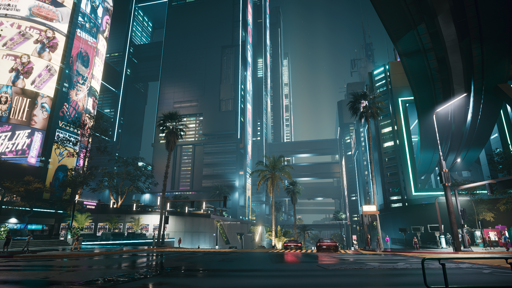

En un futuro no tan lejano, donde las luces de neón parpadean en un incesante baile de colores y sombras, surge una ciudad que nunca duerme. Night City, el corazón palpitante de la tecnología y el caos, se erige como un testimonio de la ambición humana y la decadencia corporativa.
Entre rascacielos imposibles y callejones oscuros, conviven sueños y pesadillas. Las mega-corporaciones dictan el destino de millones, mientras los marginados luchan por una oportunidad de sobrevivir, de respirar un día más. Es un lugar donde el ciberespacio se fusiona con la realidad, donde cada paso puede ser una aventura y cada esquina, una trampa mortal.
hologramas proyectan promesas de un futuro brillante, pero debajo de ese brillo, se ocultan historias de traición, lealtad y redención. Los habitantes de Night City, desde los mercenarios de la calle hasta los ejecutivos de las torres de cristal, son piezas de un rompecabezas complejo y vibrante.
Aquí, la tecnología no es solo una herramienta, es una extensión de uno mismo. Las mejoras cibernéticas adornan los cuerpos de aquellos que buscan trascender las limitaciones humanas. Sin embargo, en cada implante, en cada chip, reside la pregunta eterna: ¿dónde termina el humano y comienza la máquina?

La ciudad donde nacen las leyendas
Una pequeña demostracion del corazon de Night City,
con edificios gigantes y luces neon que inundan todos los rincones